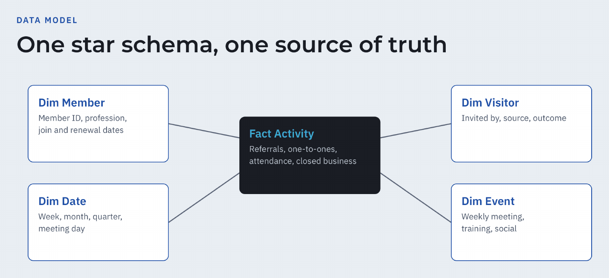
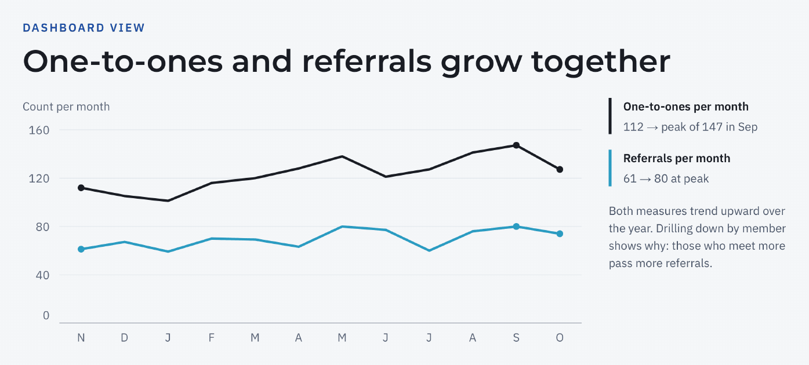

The challenge
A typical referral network tracks a lot of activity (weekly attendance, referral slips, one-to-one meetings, visitor lists), but in separate spreadsheets.
Leadership gets monthly totals rather than rates, targets or trends, and preparing each report means hours of copy and paste, with numbers that change depending on who prepared them.
The solution
Four steps from raw logs to decisions:
AuditMap every source, field and definition in use
Redefine KPIsAgree rates and targets with the group's leadership
ModelClean the data and build a star-schema semantic model
VisualisePower BI dashboards that refresh with no manual work
What the solution includes
Referrals per memberReferrals passed ÷ active members, per month
One-to-one rateOne-to-one meetings ÷ active members: the leading indicator
Visitor conversionNew members ÷ visitors, per quarter: the growth engine
Member retentionMembers renewing ÷ members due
Closed businessValue of business closed from referrals
KPI dictionaryOne agreed definition for every metric


Results
- Members averaging 4+ one-to-ones a month pass 1.8× more referrals
- Referrals up 23% in the latest quarter versus the first one tracked
- Visitor conversion up 7 points, from 15.6% to 22.5%
- Delivered: KPI dictionary, automated pipeline, Power BI model with DAX measures, dashboards and a handover session
Stack
Python
SQL
Power BI
DAX
Data Modeling
This is a demo project. All data is synthetic and the figures above are computed on that synthetic data; they do not describe any real organisation.